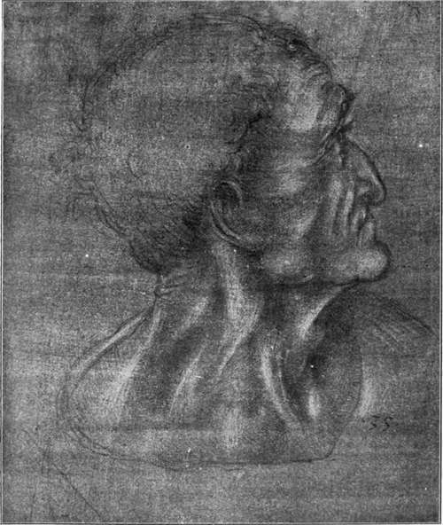

The Pictures. Part 2
Description
This section is from the book "Leonardo Da Vinci", by Edward McCurdy. Also available from Amazon: Leonardo Da Vinci.
The Pictures. Part 2
The draperies of the Virgin and Angel are simple and inevitable, with few folds, after the principle in the " Trat-tato" that " drapery should be let fall simply where it is its nature to flow;"1 and falling on the ground the hem of the long robes lies around them, suggesting the stillness of encircling pools, fulfilling what he says elsewhere on the folds of drapery, that " every thing naturally tends to remain at rest."2
A study by Leonardo, a pen drawing for the right arm and shoulder of the angel in the Annunciation is in the Library of Christ Church, Oxford, No. 227.
The contrast between the treatment of drapery in the Louvre Annunciation and the heavier texture and folds of the Annunciation in the Uffizi is almost enough of itself to forbid the ascription of the latter to Leonardo. The vexed question of its authorship has I think been solved by Mr. Berenson's attribution to Verrocchio. Possibly Lorenzo di Credi assisted him in the execution of the drapery and in the herbage of the foregound.
The head of the Virgin in the Louvre picture recurs with more elaboration in the treatment of hair and headdress in a chalk drawing in the Ufifizi, No. 428, which Professor Wickhofif ascribes to Verrocchio as a youthful work, and Morelli considers a Flemish copy after Verrocchio-an opinion concurred in by Mr. Berenson with some reservation as to the nationality of the copyist.
The drawing is of extreme delicacy of workmanship the effect of which is however somewhat marred by its over-worked, over-stippled condition, which has sufficed to suggest a copyist and a Fleming as having executed it; although something of the same timidity of touch and over-modelling is perceptible in the drawing of a female head in the British Museum (Malcolm Collection), and in the half-length of a female figure in the Museum at Dresden, both of which Morelli assigns to Verrocchio.
1 R., 392
2 R., 390
Vasari, in his life of Verrocchio, speaks of possessing certain of his drawings, "executed with much patience and great judgment-among which are some femaleheads, beautiful in appearance and in the arrangement of the hair, which Leonardo da Vinci constantly imitated on account of their beauty."
The reference to the patience shown in execution, and the special mention of the arrangement of the hair, would be entirely applicable to the drawing in the Ufifizi, which -whether it be adjudged an original or no-certainly represents one of those drawings of extraordinary finish which served as models to Leonardo; and of the study of which the Virgin of his Annunciation is the result. The similarity between the angels in the Louvre and Uffizi Annunciations would indicate that for this head, in the Louvre picture, another drawing by Verrocchio served in like stead.
But the individuality of the pupil is clearly apparent. The Virgin is the type of the Madonna of the Adoration and of the Vierge aux Rockers. We may note the high arch of the eyebrow, almost bare as was Leonardo's habit; the deep, graceful curve of the upper eyelid; and the hair caressing the temple as it falls in the softest and most wavy of tresses. The corner of the mouth is in shadow; a tiny hollow where the cheek begins veiling the spot where the lines of the lips meet.
The hands are entirely characteristic. They are almost as prehensile as those of Mona Lisa. They are folded meekly over the breast, expressing thus the Virgin's deep humility. The hand serves in his art as the index of the soul. His innate love of symbolism ever found utterance in its pose. The angel's hand, holding a rod of lilies, would seem to have a suggestion of the grace of that of the angel in Simone Martini's Annunciation, in the manner in which the fingers taper to a point on the stem of the rod.
Plate 25. Study For Head Of Judas
New Gallery Portfolio - Royal Library, Windsor
There is no profusion of botanical detail in the foreground, as in the Annunciations in the Ufiizi by Verrocchio (No. 1089), and Lorenzo di Credi.
He painted flowers better than either. The drawings of plants and flowers at Windsor are an abundant witness of his interest in their representation. In the cartoon for the tapestry, representing the sin of Adam and Eve, which was intended for the King of Portugal,-where profusion of flowers and plants would symbolize the delights from which the first parents fell by sin,-his painting of a meadow, filled with rich vegetation, is such as to occasion from Vasari words of extraordinary eulogy: "for careful execution and fidelity to nature they are such that there is no genius in the world, however God-like, which could produce similar objects with equal truth." Where, as in the Annunciation, herbage would have no such inherent symbolic place, detail is not suffered to intrude upon the simplicity of treatment which the subject required. The sward is so dark in the shadow that the eye passes over it lightly. There are a few glints of colour on the herbage. One beautiful cluster of flowers is seen just beyond where the angel is kneeling, and a few other flowers are growing under the shadow of the wall.
A row of trees in the background stands out in deep colour against the light Beyond is a vision of hill and sky-blue and gray, soft and misty in outline. In a space between the dark foliage a twin-peaked hill is seen in the far distance.
The Virgin's books lie on a simple reading-desk, which is as bare of carving or entablature as are the benches by the wall beyond it. The simplicity of the room, the humility of the kneeling Virgin, suggest something of the same purpose as is shown in the early works of the pre-Raphaelites.
Continue to:
Tags
leonardo da vinci, pictures, drawings, galleries, statues, da vinci